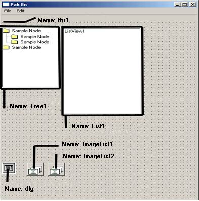

| |
| Off-line версия журнала "Sources.RU Magazine". Выпуск "Сентябрь 2006" | |
|
Программирование: · Создание игр на JavaScript · Делаем свой "pak-explorer" · Многомерная сортировка объектов · Новостная лента на ASP · Красивые ... (трилогия) · Программирование с использованием DirectX9 ПО: · Создание личного веб-сервера Графика/дизайн: · Реалистичные сигареты · Собственный IcoSet |
Делаем свой "Pak-explorer".Автор: Seriy-CoderПредисловиеСтатья наша будет посвящена такому небезызвестному формату файлов как .pak. Собственно, этот формат был придуман id Software™ еще в далеком 1996 году, когда они разрабатывали движок игры. Файлы данного формата представляют собой некий пакет файлов. Упаковка файлов, включаемых в .pak, отсутствует. Разрабатывался формат для легкого и быстрого доступа из движка игры к необходимым файлам, находящимся «снаружи». Должен сказать, что он используется не только в Quake I, он нашел свое применение и в Quake II, Half-Life и некоторых других играх, сделанных на основе движка Quark. А чем же займемся мы с вами? А займемся мы созданием программы под названием «Pak-Explorer Ex» (от слова Extended – расширенный). Основы.Перво-наперво мы определим, какие функции должна выполнять наша программа. Естественно, раз уж мы задались целью написать расширенный Pak-Explorer, необходимо сначала реализовать функции оригинальной программы, а именно: А теперь определим множество расширенных функций: С функциями разобрались. Теперь приступим к реализации. Запускаем Visual Basic. В меню выбора проекта выбираем Standart Exe. Подключаем к проекту следующие контролы: Microsoft Common Dialog Control 6.0 и Microsoft Windows Common Controls 6.0 (правый щелчок мыши на панели инструментов toolbox, пункт меню Components). Размещаем на форме компоненты TreeView, ListView, ToolBar, ImageList и CommonDialog как показано на рисунке. Дерево каталогов принято размещать слева (для простоты навигации), хотя вы можете разместить его так, как вам будет угодно. Имена объектов также указаны на рисунке:  Далее следует таблица для создания меню. Для наглядности и удобства принято создавать меню в подобном стиле. Вы можете заметить, что практически во всех программах пункт меню, обозначенный как Edit, отвечает за редактирование, а его подменю Paste за вставку, например, текста из буфера обмена. Я тоже постарался следовать этому негласному правилу. Единственное отличие, которое вы увидите – это подменю Sinchronize Files меню Edit. Оно будет отвечать за синхронизацию файлов в .pak файле и в директории (например, заменять старые файлы на новые), и кажется логичным поместить его именно в это меню. Таблица 1. Элементы меню.
Для красивого выравнивания объектов на форме при изменениях размера формы потребуется установить у объекта Toolbar свойство Align = 1 (vbAlignTop). У остальных видимых объектов свойство Align отсутствует, поэтому необходимо написать код, который будет их выравнивать. Код этот помещается в обработчик события Form_Resize(), которое происходит при изменении размера формы. On Error Resume Next Tree1.Move 0, tbr1.Height, 1935, ScaleHeight - tbr1.Height List1.Move Tree1.Width + 100, tbr1.Height, ScaleWidth - (Tree1.Width + 100), _ ScaleHeight - tbr1.Height Первая строка «защищает» от ошибки, происходящей при сильном уменьшении размеров формы (когда высота формы меньше высоты ToolBar’a). Дерево каталогов размещается ниже панели инструментов ровно на ее высоту, слева отступа нет, в высоту растягиваем на высоту формы минус высоту панели инструментов. Единственная постоянная величина – ширина дерева. Лист размещается на той же высоте, с отступом влево на ширину дерева, а ширину листа вычисляем путем вычитания ширины дерева из ширины формы. Высота аналогична высоте дерева (вычисляется тем же способом). Теперь я опишу формат самого файла, с которым предстоит работать. Вначале идет заголовок (12 байт), который состоит из трех полей по 4 байта. Первое поле содержит строку PACK, идентифицирующую данный формат (ее будем использовать для проверки открываемых файлов на правильность). Следующие четыре байта – это смещение каталога ресурсов относительно Pak-файла, а последние четыре – размер каталога в записях (то есть, количество ресурсов). Вот как это выглядит на VB: Private Type pakheader_t
magic As String * 4 ‘ заголовок PACK
diroffset As Long ‘ смещение каталога ресурсов
dirsize As Long ‘ размер каталога
End Type
Сам каталог всегда находится в конце файла. Формат каждой записи следующий (каждая запись представляет файл, который содержится в .pak файле): Private Type pakentry_t
filename As String * 56 ‘ имя записи (имя и путь к файлу)
offset As Long ‘ смещение (ГДЕ находятся данные)
size As Long ‘ размер данных (размер файла)
End Type
Поле filename содержит имя файла, включая путь к нему. Следующий параметр offset указывает смещение ресурса относительно начала Pak-файла. А параметр size указывает размер этого ресурса. Итак, теперь есть типы, с помощью которых можно работать с .pak файлами. Приступим к реализации первой возможности программы, а именно, к возможности: Начнем с реализации возможности создания .pak файла. Public Function CreatePAK(ByVal filename As String) As Boolean
Dim FFe As Integer
FFe = FreeFile
PakHeader.magic = "PACK"
PakHeader.diroffset = 12
PakHeader.dirsize = 0
On Error GoTo err_h
If Dir(filename, vbNormal) <> "" Then Kill filename
Open filename For Binary As #FFe Len = Len(PakHeader)
Put #FFe, , PakHeader
Close #FFe
CreatePAK = True
Exit Function
err_h:
CreatePAK = False
End Function
Передаваемый параметр – это есть полное имя и путь к .pak файлу (например “c:\newpack.pak”). Заполняем структуру PakHeader (о которой говорилось чуть выше) «правильными» значениями, а именно: заголовок “PACK”, смещение = 12 (так как сам заголовок «весит» 12 байт), размер каталога = 0 (потому что ничего там ещё нет). Проверяем, нету ли такого же файла, а если есть – удаляем его. Открываем файл для двоичного (Binary) доступа и смело пишем всю структуру PakHeader в него. Все. Закрываем файл, функция возвращает True. Public Function OpenPAK(ByVal filename As String) As Boolean
Dim FFe As Integer, loopvar As Integer, curentry As Integer
Dim ReadString As String * 64
FFe = FreeFile
Open filename For Random As #FFe Len = Len(PakHeader)
Get #FFe, , PakHeader
Close #FFe
If PakHeader.magic <> "PACK" Then
FFe = MsgBox("Invalid Pack File", vbOKOnly + vbInformation)
OpenPAK = False
Exit Function
End If
ReDim Preserve StoreEntry((PakHeader.dirsize / 64))
FFe = FreeFile
curentry = 1
Open filename For Binary As #FFe
Get #FFe, PakHeader.diroffset + 1, PakEntry
For loopvar = 1 To ((PakHeader.dirsize / 64))
StoreEntry(curentry).filename = PakEntry.filename
StoreEntry(curentry).offset = PakEntry.offset
StoreEntry(curentry).size = PakEntry.size
curentry = curentry + 1
Get #FFe, , PakEntry
Next
Close #FFe
orig_filename = filename
OpenPAK = True
End Function
Эта функция должна сделать 2 вещи: проверить, правильный ли файл открывается, а если да, то заполнить массив StoreEntry(), который-то и хранит данные о файлах в .pak файле. Итак, для начала читаем заголовок (PakHeader). С помощью инструкции Get #FFe, PakHeader заполняем структуру данными, а затем проверяем PakHeader.magic, соответствует ли файл формату "PACK". Если нет, говорим, что формат неправильный и выходим из функции. Если формат правильный, то заполняем массив StoreEntry данными о находящихся в .pak’e файлах: ReDim Preserve StoreEntry((PakHeader.dirsize / 64)) Переопределяем массив согласно количеству реально находящихся файлов в .pak’e: Open filename For Binary As #FFe Get #FFe, PakHeader.diroffset + 1, PakEntry Открываем повторно файл, считываем первое «вхождение». For loopvar = 1 To ((PakHeader.dirsize / 64))
StoreEntry(curentry).filename = PakEntry.filename
StoreEntry(curentry).offset = PakEntry.offset
StoreEntry(curentry).size = PakEntry.size
curentry = curentry + 1
Get #FFe, , PakEntry
Next
Теперь бегаем по всем «вхождениям», считываем их и соответственно заполняем поля массива данными.
Вот и все. Считали. Sub ShowEntry(TV As TreeView)
On Error Resume Next
Dim TP2() As String
Dim i&, j&
Dim TMP$
Dim ParentKey$
TV.Nodes.Add , tvwFirst, "ROOT", orig_filename, 3
' Добавляем самый верхний, корневой элемент с именем открываемого .pak файла
' Бегаем по всем файлам в .pak файле
For i = 0 To UBound(StoreEntry)
' Берем только путь, отделяя имя файла
TMP = GetPath(StoreEntry(i).filename)
' если в строке есть символ «/», значит, имеем несколько вложенных папок
If InStr(TMP, "/") > 0 Then
' разбиваем на подпапки
TP2 = Split(TMP, "/")
ParentKey = vbNullString
' добавляем первую
TV.Nodes.Add "ROOT", tvwChild, TP2(0), TP2(0), 1, 2
' запоминаем предыдущую папку
ParentKey = TP2(0)
For j = 1 To UBound(TP2)
TMP = TP2(j)
' «вкладываем» папку в предыдущую
TV.Nodes.Add ParentKey, tvwChild, ParentKey & TMP & "\", TMP, 1, 2
ParentKey = ParentKey & TMP & "\"
Next
Else
' не имеем вложенных, добавляем к корневой
If TMP <> vbNullString Then TV.Nodes.Add "ROOT", tvwChild, TMP, TMP, 1, 2
End If
Next
End Sub
Процедура показа файлов в листе. Передаваемый параметр должен содержать путь внутри .pak файла. Public Sub ShowFilesEntry(ByVal path As String)
Dim i As Long, l As Long, TMP As String
fMain.List1.ListItems.Clear
' если длина пути НЕ равна длине оригинального пути имени файла (эта проверка
' необходима, так как корневой каталог в дереве TreeView назван
' оригинальным именем файла)
If Len(path) <> Len(orig_filename) Then
' «отделяем» оригинальный путь и имя файла от нужного
path = Right$(path, Len(path) - (Len(orig_filename) + 1))
' теперь «пробегаем» по всем «файлам» в .pak файле
For i = LBound(StoreEntry) + 1 To UBound(StoreEntry)
' если в имени файла текущего StoreEntry встречается наш путь, то
If InStr(1, StoreEntry(i).filename, path) <> 0 Then
' проверяем еще раз, на всякий случай, по длине
If Len(GetPath(RemoveStuff(StoreEntry(i).filename))) = Len(path) Then
' добавляем в лист файл
AddFile GetNam(StoreEntry(i).filename), _
StoreEntry(i).size
End If
End If
Next i
Else
' теперь «пробегаем» по всем «файлам» в .pak файле
For i = LBound(StoreEntry) + 1 To UBound(StoreEntry)
' если в имени файла не содержится обратных слешей, значит,
' файл лежит в корневой
директории)
If InStr(1, RemoveStuff(StoreEntry(i).filename), "/") = 0 Then
' опять проверяем на длину и добавляем в список
AddFile RemoveStuff((StoreEntry(i).filename)), _
StoreEntry(i).size
End If
Next i
End If
End Sub
Данная процедура добавляет элемент в List: ' тут просто добавляем в лист имена файлов и их размер
Private Sub AddFile(ByVal file As String, ByVal size As Long)
fMain.List1.ListItems.Add , , file
' для удобства вычисляем размер файлов и показываем единицу размерности (Kb или b)
If size <= 1024 Then
fMain.List1.ListItems(fMain.List1.ListItems.Count) _
.ListSubItems.Add , , size & " b"
ElseIf size > 1024 Then
fMain.List1.ListItems(fMain.List1.ListItems.Count) _
.ListSubItems.Add , , size \ 1024 & " Kb"
End If
End Sub
Ну вот, теперь программа может открывать .pak файлы и просматривать их содержимое. В следующей статье добавим возможность редактировать (то есть, удалять\добавлять) .pak файлы. Скачать исходник: pak.zip (10 кб) С уважением, Seriy-Coder! |
| Журнал "Исходники.RU". Copyright (c) 2006 by Исходники.RU. Designed by Mastilior, Made up by ...:::Alex:::.... |